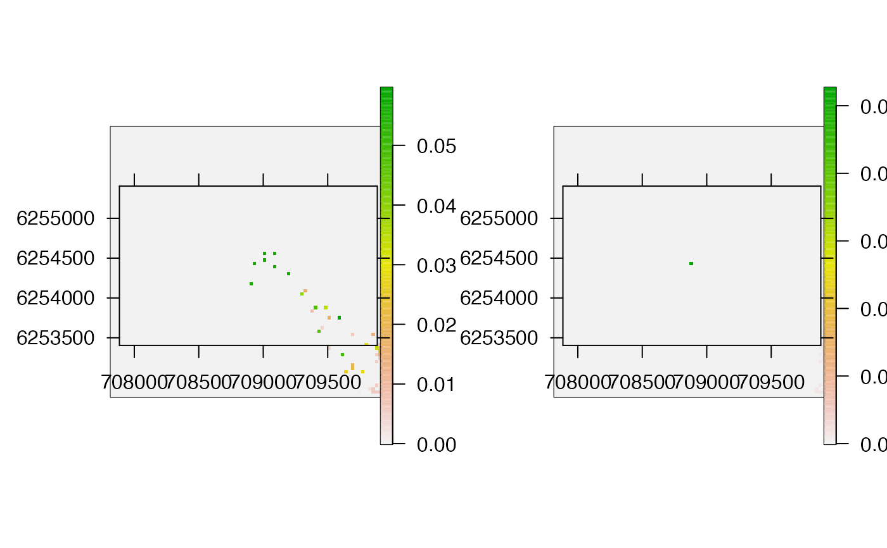
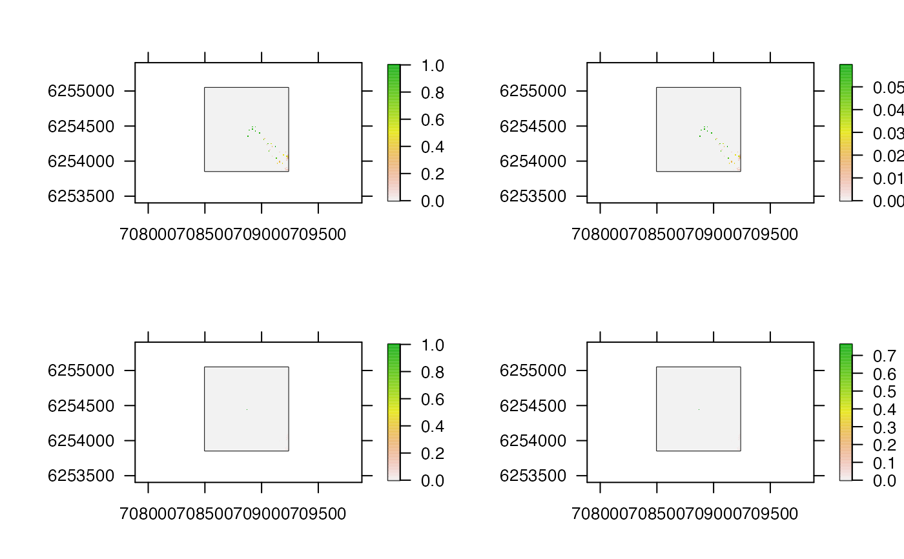
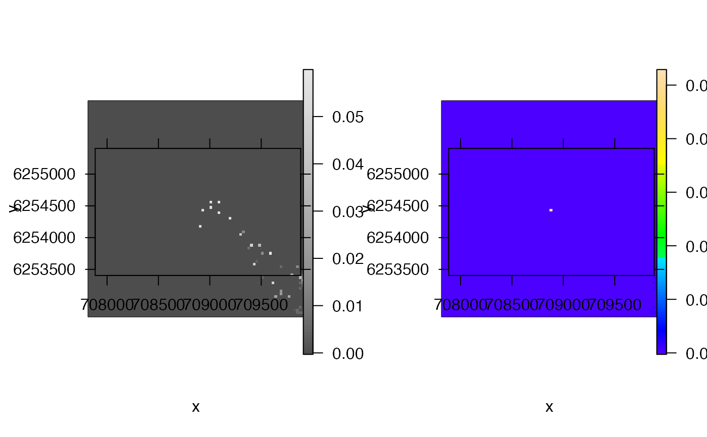

This function creates a raster of the `probability of use' across an area based on (a) particles sampled or (b) paths reconstructed by a particle filtering (PF) algorithm. To implement the function, an (a) pf_archive-class object that contains connected particles (locations) sampled by pf and processed by pf_simplify or (b) pf_path-class object that contains reconstructed paths must be supplied. The function extracts sampled locations and, for each location, calculates `the probability of use' for that location over the time series (see Details). This is (optionally) plotted and returned (invisibly) as a raster.
A pf_archive-class object (from pf plus pf_simplify with return = "archive") or a pf_path-class object (from pf plus pf_simplify with return = "path").
A raster that defines a grid across the area of interest.
(optional) A function to transform cell weights (e.g, log).
A character that defines how raster values are scaled: "original" uses the original values; "max" scales values by the maximum value (so that, if transform = NULL, they lie between zero and one; and "sum" scales values by their sum so that they sum to one.
A logical input that defines whether or not to plot the map.
If plot = TRUE, add_rasters is a named list, passed to pretty_map, to customise the appearance of the plotted surface.
Additional arguments passed to pretty_map.
The function invisibly returns a raster, in which each cell contains the `probability of use' score and (optionally) produces a plot of this surface.
For particle-based implementations, this function is designed to be implemented for the subset of sampled particles that formed continuous paths from the start to the end of the time series (see pf_simplify). At each time step, only one record of each location (derived by summarising the probabilities of multiple samples of the same location with the summarise_pf argument in pf_simplify) should be passed to pf_plot_map to ensure that cell scores depend on the number of time steps when the individual could have occupied a given cell, rather than the total number of samples of a location. For each location, the 'probability of use' is calculated as the sum of the number of times (time steps) that the location was sampled, weighted by the associated probabilities of each sample, over the total number of time steps. The benefit of this approach is that all particles that were part of paths from the start to the end of the time series are incorporated in the resultant map. However, this comes at the cost of simplifying cell probabilities for duplicate records and ignoring variation in the overall likelihood of different movement paths.
For path-based implementations, the function is designed to be implemented for paths reconstructed by pf_simplify. For each path, as for particle-based implementations, for each location, the 'probability of use' is calculated as the sum of the number of times (time steps) that the location was sampled, weighted by the associated probabilities of each sample, over the total number of time steps. (This is equivalent to calculating a weighted sum of the paths). Scores are then averaged across paths. This benefit of this approach is that it is possible to account for both location probabilities (in the weighted summation) and path probabilities (in the averaging of cell scores across paths, although this is not yet implemented). However, this approach can usually only be implemented for a subset of all possible paths (see max_n_copies in pf_simplify) and these paths may not be independent (they may share substantial sections).
For either implementation, raw scores can be transformed or scaled to facilitate comparisons.
pf implements PF. pf_simplify assembles paths from particle histories. pf_plot_history visualises particle histories. pf_plot_1d, pf_plot_2d and pf_plot_3d provide plotting routines for paths. pf_loglik calculates the log-probability of each path.
#### Prepare data
## Particle-based implementation
# The example data 'dat_dcpf_histories' contains all particles sampled
# ... by an implementation of the DCPF algorithm. However, not all particles
# ... that were sampled at one time step may have been near to particles sampled
# ... at the next time step. In addition, some particles may have been sampled
# ... multiple times at one time step, but our maps of space use should reflect
# ... the number of time steps that the individual could have occupied a location,
# ... rather than the total number of samples of a location. Hence, to map
# ... space use, we should focus on the subset of particles that were connected
# ... between time steps and only retain one record of each particle at each time step
# ... using pf_simplify() with return = "archive"
dat_dcpf_histories_connected <-
pf_simplify(dat_dcpf_histories,
summarise_pr = TRUE,
return = "archive")
#> flapper::pf_simplify() called (@ 2023-02-19 15:03:46)...
#> ... Getting pairwise cell movements based on calc_distance = 'euclid'...
#> ... ... Stepping through time steps to join coordinate pairs...
#> ... ... Identifying connected cells...
#> ... ... Processing connected cells for return = 'archive'...
#> ... flapper::pf_simplify() call completed (@ 2023-02-19 15:03:46) after ~0.01 minutes.
## Path based implementation
# The example data 'dat_dcpf_paths' contains a sample of paths reconstructed
# ... by the DCPF algorithm and we can also implement the function for these paths.
#### Example (1): Implement the function with default options
pp <- par(mfrow = c(1, 2))
pf_plot_map(dat_dcpf_histories_connected, map = dat_dc$args$bathy)
#> prettyGraphics::pretty_map() CRS taken as: 'NA'.
pf_plot_map(dat_dcpf_paths, map = dat_dc$args$bathy)
#> prettyGraphics::pretty_map() CRS taken as: 'NA'.

par(pp)
#### Example (2): Re-scale the map(s)
pp <- par(mfrow = c(2, 2))
pf_plot_map(dat_dcpf_histories_connected, map = dat_dc$args$bathy, scale = "max")
#> prettyGraphics::pretty_map() CRS taken as: 'NA'.
pf_plot_map(dat_dcpf_histories_connected, map = dat_dc$args$bathy, scale = "sum")
#> prettyGraphics::pretty_map() CRS taken as: 'NA'.
pf_plot_map(dat_dcpf_paths, map = dat_dc$args$bathy, scale = "max")
#> prettyGraphics::pretty_map() CRS taken as: 'NA'.
pf_plot_map(dat_dcpf_paths, map = dat_dc$args$bathy, scale = "sum")
#> prettyGraphics::pretty_map() CRS taken as: 'NA'.

par(pp)
#### Example (3): Customise the map(s)
pp <- par(mfrow = c(1, 2))
pf_plot_map(dat_dcpf_histories_connected, map = dat_dc$args$bathy,
add_rasters = list(col = grDevices::grey.colors(n = 100)),
xlab = "x", ylab = "y")
#> prettyGraphics::pretty_map() CRS taken as: 'NA'.
pf_plot_map(dat_dcpf_paths, map = dat_dc$args$bathy,
add_rasters = list(col = grDevices::topo.colors(n = 100)),
xlab = "x", ylab = "y")
#> prettyGraphics::pretty_map() CRS taken as: 'NA'.

par(pp)